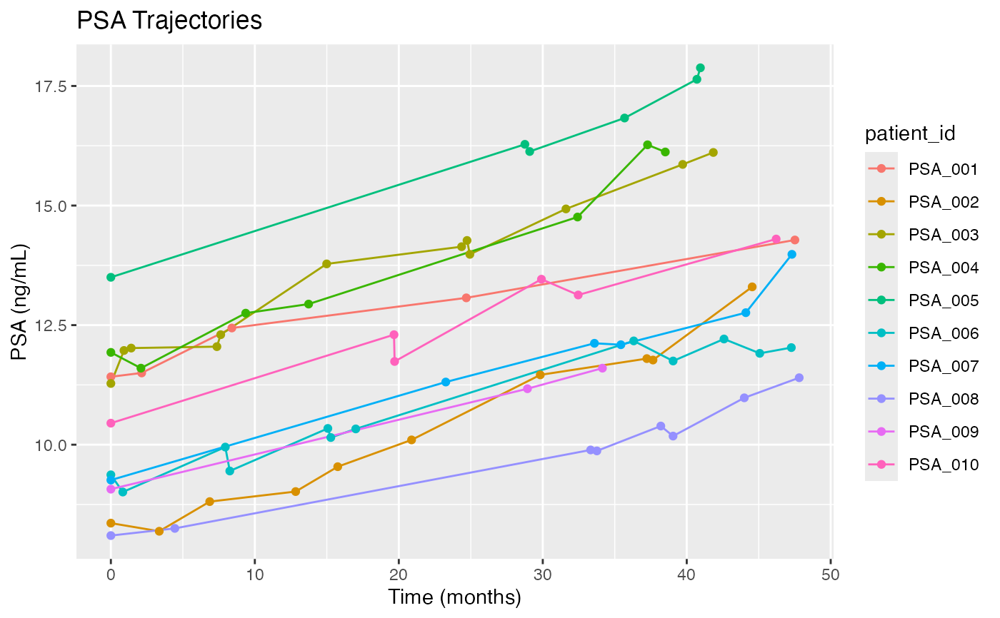

A longitudinal dataset containing PSA measurements and survival outcomes for 200 prostate cancer patients. This dataset is designed for demonstrating joint longitudinal-survival modeling techniques.
Format
A data frame with 1369 observations and 8 variables:
- patient_id
Character. Unique patient identifier (PSA_001 to PSA_200)
- age
Numeric. Patient age at baseline (years)
- stage
Factor. Tumor stage (T1, T2, T3, T4)
- gleason_score
Numeric. Gleason score (6-10)
- visit_time
Numeric. Time of PSA measurement (months from baseline)
- psa_level
Numeric. PSA level (ng/mL)
- survival_time
Numeric. Time to death or last follow-up (months)
- death_status
Numeric. Event indicator (0 = censored, 1 = death)
Details
The dataset simulates realistic PSA trajectories where:
PSA levels generally increase over time
Higher tumor stage and Gleason score are associated with higher PSA levels
Current PSA level influences survival hazard
Visit intervals are irregular, mimicking real clinical practice
14.5% event rate with median follow-up of 60 months
Examples
data(psa_joint_data)
# Basic data exploration
head(psa_joint_data)
#> patient_id age stage gleason_score visit_time psa_level survival_time
#> 1 PSA_001 75 T3 9 0.000000 11.42 60.0
#> 2 PSA_001 75 T3 9 2.140433 11.50 60.0
#> 3 PSA_001 75 T3 9 8.402660 12.44 60.0
#> 5 PSA_001 75 T3 9 24.688156 13.07 60.0
#> 7 PSA_001 75 T3 9 47.512505 14.28 60.0
#> 8 PSA_002 74 T2 9 0.000000 8.36 3.9
#> death_status
#> 1 0
#> 2 0
#> 3 0
#> 5 0
#> 7 0
#> 8 1
# Number of patients and visits
length(unique(psa_joint_data$patient_id)) # 200 patients
#> [1] 200
table(table(psa_joint_data$patient_id)) # Visit distribution
#>
#> 1 2 3 4 5 6 7 8 9 10 11 12
#> 1 1 13 16 29 32 36 26 17 13 9 7
# Plot individual PSA trajectories for first 10 patients
library(ggplot2)
first_10 <- subset(psa_joint_data, patient_id %in% unique(patient_id)[1:10])
ggplot(first_10, aes(x = visit_time, y = psa_level, color = patient_id)) +
geom_line() + geom_point() +
labs(title = "PSA Trajectories", x = "Time (months)", y = "PSA (ng/mL)")
